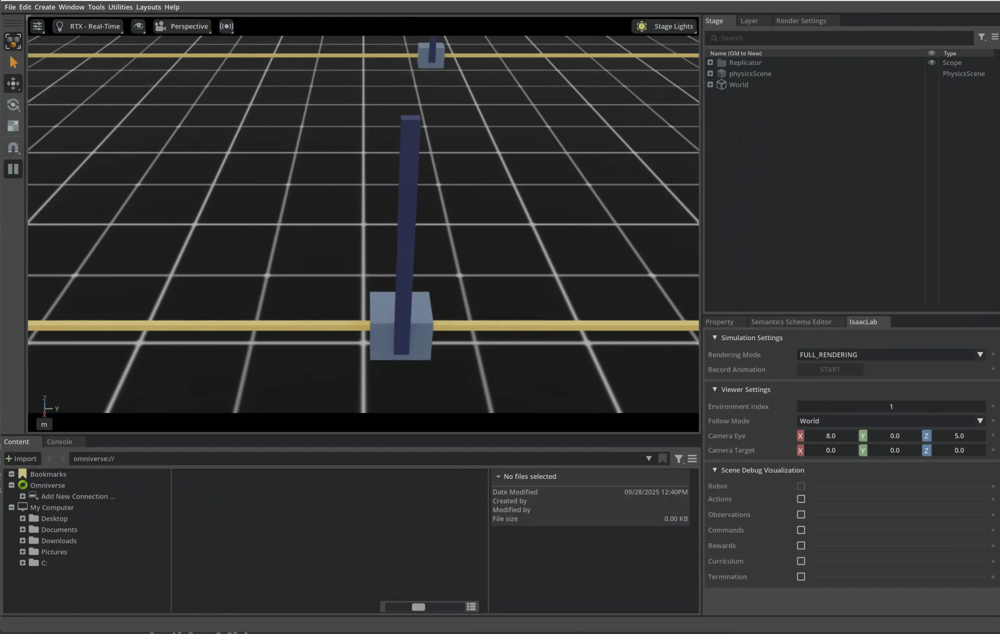

In my CSP-400 class, a couple of the student teams have been building projects using NVIDIA IsaacLab. If you’ve not come across it, IsaacLab is an open source framework and set of algorithms for training robots. It’s built on top of NVIDIA IsaacSim and Omniverse, which enables training to happen at scale (i.e., thousands of robots learning simultaneously) in a sophisticated virtual environment.

Getting IsaacLab running well in a Windows environment can, however, be challenging. NVIDIA recommends a Docker container for running IsaacLab in a professional environment, but this doesn’t work on WSL (as it requires Vulkan support). In addition, Docker and Linux environments are typically beyond what is usable in a high school environment today, with many of the students primarily using Windows-based machines.
Running NVIDIA IsaacLab on Windows
To help overcome this, I’ve created a GitHub repo that makes it easier to get started with NVIDIA IsaacLab on Windows.
The repo offers a uv-based project that makes it easy (three commands in PowerShell) to get your own IsaacLab project up and running:
- Create or update the virtual environment from the lockfile:
uv sync- Activate the virtual environment (from a PowerShell prompt):
.\.venv\Scripts\Activate- Launch IsaacSim!
isaacsimI’ve also included instructions to enable Pylance and debugging support in VS Code, both of which are important as students explore the APIs and frameworks. You can find more details in the repo’s README.md.
Conclusion
If you are using IsaacLab on Windows, I hope this repo helps address some of the challenges that our students encountered.
We are just getting started in my class, but NVIDIA IsaacLab opens up some interesting learning possibilities for teaching CS and AI at the undergrad and high school levels. It goes beyond many of the robot classes taught today by introducing RL concepts and offering a powerful virtual environment vs. needing access to physical robot hardware.